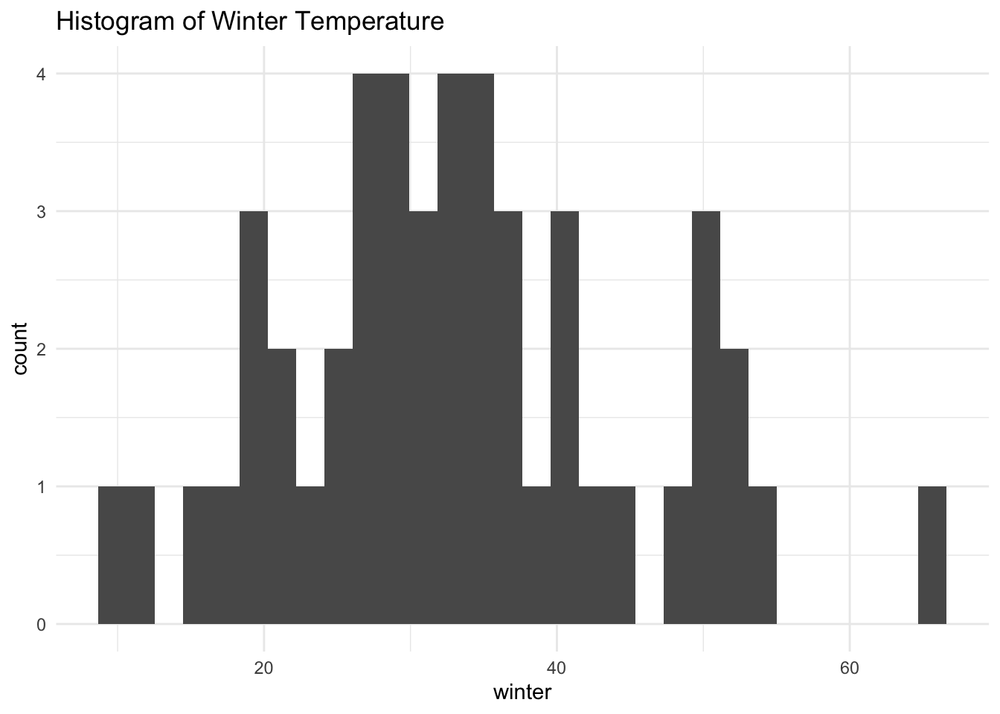

library(tidyverse)
library(papaja) #for formatting p values
library(knitr) #for formatting tables
library(psych) #for generating easy descriptives
library(effectsize) #for generating effect sizes
library(performance) #for checking multicollinaerityModule 7: Lab Starter KEY
Purpose
In today’s lab, we will practice centering, standardizing, and log transforming data. We will also work with polynomial data and, for all topics, we will discuss interpretation.
For today’s lab, you will need to load the following libraries.
Research scenario
For the first part of today’s lab, we will be examining predictors of population size in the US.
Read in the data
First, let’s read in the data and then use View() to check it out.
Today’s dataset is called pop_predictors.csv. Let’s read it in and name it pop.
The data has 4 columns:
- state: the state in which the data were collected
- population: population size (in the late 80s / early 90s)
- income: average income (in the late 80s / early 90s)
- winter: average temperature during winter months
We should always examine our data first!
Let’s start by using the describe() function in the {psych} package to examine our data.
# students: write this code!
describe(pop) vars n mean sd median trimmed mad min max range
state* 1 50 25.50 14.58 25.5 25.50 18.53 1 50 49
population 2 48 5134.25 5506.11 3576.0 4161.18 3268.39 454 29760 29306
income 3 48 28643.83 5175.34 27697.0 28297.28 4920.01 20136 41721 21585
winter 4 48 33.33 11.93 32.0 32.98 9.64 10 66 56
skew kurtosis se
state* 0.00 -1.27 2.06
population 2.36 6.71 794.74
income 0.62 -0.09 747.00
winter 0.43 -0.11 1.72Question: What do you noticed about the means and standard deviations of our variables? …range? …scale?
Centering
First, without doing any transformations, run a model predicting population from income. Get a summary of your model.
model <- lm(population ~ income, data = pop)
summary(model)
Call:
lm(formula = population ~ income, data = pop)
Residuals:
Min 1Q Median 3Q Max
-6478 -2729 -1097 775 22343
Coefficients:
Estimate Std. Error t value Pr(>|t|)
(Intercept) -4006.2911 4354.3159 -0.920 0.3623
income 0.3191 0.1496 2.132 0.0383 *
---
Signif. codes: 0 '***' 0.001 '**' 0.01 '*' 0.05 '.' 0.1 ' ' 1
Residual standard error: 5309 on 46 degrees of freedom
(2 observations deleted due to missingness)
Multiple R-squared: 0.08996, Adjusted R-squared: 0.07018
F-statistic: 4.547 on 1 and 46 DF, p-value: 0.03834Question: How would you interpret the intercept? Is this meaningful?
Now, let’s center the income variable and re-run the regression.
# students: fill in `mutate()` function to create income variable
#first, create the income variable
pop <- pop %>%
mutate(income_c = income-(mean(income)))
#check out your data - what do you notice? what might have happened?
pop# A tibble: 50 × 5
state population income winter income_c
<chr> <dbl> <dbl> <dbl> <dbl>
1 ME 1228 27854 22 NA
2 NH 1109 36329 22 NA
3 VT 563 29792 16 NA
4 MA 6016 36952 30 NA
5 RI 1003 32181 32 NA
6 CT 3287 41721 30 NA
7 NY 17990 32965 28 NA
8 NJ 7730 40927 35 NA
9 PA 11882 29069 32 NA
10 OH 10847 28706 31 NA
# ℹ 40 more rows#let's try again!
pop <- pop %>%
mutate(income_c = income-(mean(income, na.rm=TRUE)))
#check out the data again -- much better!
pop# A tibble: 50 × 5
state population income winter income_c
<chr> <dbl> <dbl> <dbl> <dbl>
1 ME 1228 27854 22 -790.
2 NH 1109 36329 22 7685.
3 VT 563 29792 16 1148.
4 MA 6016 36952 30 8308.
5 RI 1003 32181 32 3537.
6 CT 3287 41721 30 13077.
7 NY 17990 32965 28 4321.
8 NJ 7730 40927 35 12283.
9 PA 11882 29069 32 425.
10 OH 10847 28706 31 62.2
# ℹ 40 more rows#now, run the model
model_2 <- lm(population ~ income_c, data = pop)
summary(model_2)
Call:
lm(formula = population ~ income_c, data = pop)
Residuals:
Min 1Q Median 3Q Max
-6478 -2729 -1097 775 22343
Coefficients:
Estimate Std. Error t value Pr(>|t|)
(Intercept) 5134.2500 766.3430 6.700 2.57e-08 ***
income_c 0.3191 0.1496 2.132 0.0383 *
---
Signif. codes: 0 '***' 0.001 '**' 0.01 '*' 0.05 '.' 0.1 ' ' 1
Residual standard error: 5309 on 46 degrees of freedom
(2 observations deleted due to missingness)
Multiple R-squared: 0.08996, Adjusted R-squared: 0.07018
F-statistic: 4.547 on 1 and 46 DF, p-value: 0.03834Question: How would you interpret the intercept? Is this meaningful?
Question: How would you interpret the slope?
Now, let’s try a multiple regression. Predict population from income centered and winter temperature. Get a summary of your model.
# students: fill in model
model_3 <- lm(population ~ income_c + winter, data = pop)
summary(model_3)
Call:
lm(formula = population ~ income_c + winter, data = pop)
Residuals:
Min 1Q Median 3Q Max
-6987 -2586 -1237 1293 18035
Coefficients:
Estimate Std. Error t value Pr(>|t|)
(Intercept) -1754.0309 2070.7451 -0.847 0.401448
income_c 0.3821 0.1351 2.828 0.006972 **
winter 206.6484 58.6159 3.525 0.000985 ***
---
Signif. codes: 0 '***' 0.001 '**' 0.01 '*' 0.05 '.' 0.1 ' ' 1
Residual standard error: 4752 on 45 degrees of freedom
(2 observations deleted due to missingness)
Multiple R-squared: 0.2869, Adjusted R-squared: 0.2552
F-statistic: 9.053 on 2 and 45 DF, p-value: 0.0004962Question: How would you interpret the intercept? Is this meaningful?
Question: How would you interpret the slope for income_c?
Question: How would you interpret the slope for winter?
Question: How would you summarize your findings?
Now, let’s get confidence intervals and effect sizes for each of our predictors.
We get CIs using the confint() function and effect size using eta_squared() in the {effectsize} package. We want eta squared, NOT partial eta squared. How would you specify that in the function? (hint: check out the help info)
# students: fill in eta squared code
confint(model_3) 2.5 % 97.5 %
(Intercept) -5924.7255866 2416.6637554
income_c 0.1099422 0.6542058
winter 88.5899990 324.7068560eta_squared(model_3, partial=FALSE)# Effect Size for ANOVA (Type I)
Parameter | Eta2 | 95% CI
-------------------------------
income_c | 0.09 | [0.00, 1.00]
winter | 0.20 | [0.05, 1.00]
- One-sided CIs: upper bound fixed at [1.00].Standardizing
Now, let’s say we want to know whether income or winter temperature is the stronger predictor of population. In the previous model, we found the the expected increase in population for a one-unit increase in income (holding winter temp constant) is 0.38 and the expected increase for a one-unit increase in winter temp (holding income constant) is 206.65. However, because these measures are on different scales, we can’t say that the effect of temperature is bigger just because the value is larger. To make this comparison possible, we can scale our variables.
First, let’s z-score each of our variables.
# students: create z-scores
pop <- pop %>%
mutate(income_z = (income-mean(income, na.rm = TRUE))/sd(income, na.rm = TRUE),
winter_z = (winter-mean(winter, na.rm = TRUE))/sd(winter, na.rm = TRUE))
#let's look at the descriptives again, too
describe(pop) vars n mean sd median trimmed mad min max
state* 1 50 25.50 14.58 25.50 25.50 18.53 1.00 50.00
population 2 48 5134.25 5506.11 3576.00 4161.18 3268.39 454.00 29760.00
income 3 48 28643.83 5175.34 27697.00 28297.28 4920.01 20136.00 41721.00
winter 4 48 33.33 11.93 32.00 32.98 9.64 10.00 66.00
income_c 5 48 0.00 5175.34 -946.83 -346.56 4920.01 -8507.83 13077.17
income_z 6 48 0.00 1.00 -0.18 -0.07 0.95 -1.64 2.53
winter_z 7 48 0.00 1.00 -0.11 -0.03 0.81 -1.96 2.74
range skew kurtosis se
state* 49.00 0.00 -1.27 2.06
population 29306.00 2.36 6.71 794.74
income 21585.00 0.62 -0.09 747.00
winter 56.00 0.43 -0.11 1.72
income_c 21585.00 0.62 -0.09 747.00
income_z 4.17 0.62 -0.09 0.14
winter_z 4.69 0.43 -0.11 0.14INST NOTE: mean of z-scored variables is 0 and sd is 1 – this is what we’d expect!
Next, run a regression predicting population from the z-scored variables you just created. Check out a summary.
# students: fill in model
model_4 <- lm(population ~ income_z + winter_z, data = pop)
summary(model_4)
Call:
lm(formula = population ~ income_z + winter_z, data = pop)
Residuals:
Min 1Q Median 3Q Max
-6987 -2586 -1237 1293 18035
Coefficients:
Estimate Std. Error t value Pr(>|t|)
(Intercept) 5134.3 685.9 7.486 1.95e-09 ***
income_z 1977.4 699.3 2.828 0.006972 **
winter_z 2465.2 699.3 3.525 0.000985 ***
---
Signif. codes: 0 '***' 0.001 '**' 0.01 '*' 0.05 '.' 0.1 ' ' 1
Residual standard error: 4752 on 45 degrees of freedom
(2 observations deleted due to missingness)
Multiple R-squared: 0.2869, Adjusted R-squared: 0.2552
F-statistic: 9.053 on 2 and 45 DF, p-value: 0.0004962Question: How would you interpret the intercept?
Question: How would you interpret the effect of income?
Question: How would you interpret the effect of winter?
Question: Which is the stronger predictor?
Compare the summary for your current model (model_4) to the summary for the previous model (model_3).
summary(model_4)
Call:
lm(formula = population ~ income_z + winter_z, data = pop)
Residuals:
Min 1Q Median 3Q Max
-6987 -2586 -1237 1293 18035
Coefficients:
Estimate Std. Error t value Pr(>|t|)
(Intercept) 5134.3 685.9 7.486 1.95e-09 ***
income_z 1977.4 699.3 2.828 0.006972 **
winter_z 2465.2 699.3 3.525 0.000985 ***
---
Signif. codes: 0 '***' 0.001 '**' 0.01 '*' 0.05 '.' 0.1 ' ' 1
Residual standard error: 4752 on 45 degrees of freedom
(2 observations deleted due to missingness)
Multiple R-squared: 0.2869, Adjusted R-squared: 0.2552
F-statistic: 9.053 on 2 and 45 DF, p-value: 0.0004962summary(model_3)
Call:
lm(formula = population ~ income_c + winter, data = pop)
Residuals:
Min 1Q Median 3Q Max
-6987 -2586 -1237 1293 18035
Coefficients:
Estimate Std. Error t value Pr(>|t|)
(Intercept) -1754.0309 2070.7451 -0.847 0.401448
income_c 0.3821 0.1351 2.828 0.006972 **
winter 206.6484 58.6159 3.525 0.000985 ***
---
Signif. codes: 0 '***' 0.001 '**' 0.01 '*' 0.05 '.' 0.1 ' ' 1
Residual standard error: 4752 on 45 degrees of freedom
(2 observations deleted due to missingness)
Multiple R-squared: 0.2869, Adjusted R-squared: 0.2552
F-statistic: 9.053 on 2 and 45 DF, p-value: 0.0004962Question: What changes? What stays the same?
Log Transformation
Now, let’s focus on the effect of winter temperature on population size.
First, let’s look at the distribution of our variables.
pop %>%
ggplot(aes(x = population)) +
geom_histogram() +
theme_minimal() +
labs(title = "Histogram of Population Size")`stat_bin()` using `bins = 30`. Pick better value with `binwidth`.Warning: Removed 2 rows containing non-finite outside the scale range
(`stat_bin()`).pop %>%
ggplot(aes(x = winter)) +
geom_histogram() +
theme_minimal() +
labs(title = "Histogram of Winter Temperature")`stat_bin()` using `bins = 30`. Pick better value with `binwidth`.Warning: Removed 2 rows containing non-finite outside the scale range
(`stat_bin()`).
Question: Which variable might we want to log transform? Why?
Log transform the population variable, then examine the distribution again.
# students: log transform the `population` variable; use it to create a histogram
pop <- pop %>%
mutate(population_log = log(population))
pop %>%
ggplot(aes(x = population_log)) +
geom_histogram() +
theme_minimal() +
labs(title = "Histogram of (Log) Population Size")`stat_bin()` using `bins = 30`. Pick better value with `binwidth`.Warning: Removed 2 rows containing non-finite outside the scale range
(`stat_bin()`).Question: How does the data distribution look now?
Now, run a regression predicting population from winter temperature. Examine the summary.
model_5 <- lm(population_log ~ winter, data = pop)
summary(model_5)
Call:
lm(formula = population_log ~ winter, data = pop)
Residuals:
Min 1Q Median 3Q Max
-1.6666 -0.6405 -0.0800 0.6158 1.9313
Coefficients:
Estimate Std. Error t value Pr(>|t|)
(Intercept) 6.72416 0.37986 17.702 < 2e-16 ***
winter 0.04079 0.01074 3.797 0.000427 ***
---
Signif. codes: 0 '***' 0.001 '**' 0.01 '*' 0.05 '.' 0.1 ' ' 1
Residual standard error: 0.8785 on 46 degrees of freedom
(2 observations deleted due to missingness)
Multiple R-squared: 0.2386, Adjusted R-squared: 0.2221
F-statistic: 14.42 on 1 and 46 DF, p-value: 0.0004273Question: What do you need to do before you can interpret the effect of winter temp on population?
Recall that:
\(log_b(n) = x \leftrightarrow b^x = n\)
To interpret the intercept, use the exp() function to put the outcome variable back into original units.
# students: expotentiate the intercept
exp(6.72416)[1] 832.2726Question: How would you interpret the intercept?
Now, use the following steps to interpret the slope:
- expotentiate the coefficient
- subtract one from this number
- multiply by one hundred to get a percentage
For every one-unit increase in our predictor, our dependent variable increases/decreases by this percent.
# students: fill in code below
#expotentiate the coefficient
winter_exp <- exp(0.04079)
#subtract one from this number, then multiply by 100
(winter_exp-1)*100[1] 4.163334Question: How would you interpret the slope?
Polynomials
Research scenario
Using cross-sectional data, we will examine the development (change and/or stability) of conscientiousness in adulthood (age 21 to 60). Based on previous research, we hypothesize that people will increase in conscientiousness with age; however, the rate of increase will be greatest during early adulthood (20s and 30s) and slow thereafter.
Question: Which part of the above paragraph refers to a linear trend of age?
Question: Which part of the above paragraph refers to a quadratic trend of age?
Read in the data
First, let’s read in the data and then use View() to check it out.
Today’s dataset is called polynomial.csv. Let’s read it in and name it polynomial.
The data has 2 columns:
- age: participant age
- conscientiousness: score on conscientiousness measure
We should always examine our data first!
Let’s start by plotting the relation between conscientiousness and age.
polynomial %>%
ggplot(aes(x = age, y = conscientiousness)) +
geom_point()Question: What do you notice about the relation between age and conscientiousness?
Fist, we will examine a linear trend of age. Run a model predicting conscientiousness from age. Check out the summary.
# students: test the linear effect
model_linear <- lm(conscientiousness ~ age, data = polynomial)
summary(model_linear)
Call:
lm(formula = conscientiousness ~ age, data = polynomial)
Residuals:
Min 1Q Median 3Q Max
-3.4168 -0.7653 0.0428 0.7284 3.1013
Coefficients:
Estimate Std. Error t value Pr(>|t|)
(Intercept) 54.728689 0.211459 258.81 <2e-16 ***
age 0.222682 0.005057 44.04 <2e-16 ***
---
Signif. codes: 0 '***' 0.001 '**' 0.01 '*' 0.05 '.' 0.1 ' ' 1
Residual standard error: 1.108 on 398 degrees of freedom
Multiple R-squared: 0.8297, Adjusted R-squared: 0.8293
F-statistic: 1939 on 1 and 398 DF, p-value: < 2.2e-16Question: How would you interpret the intercept?
Question: How would you interpret the slope?
Even if we found a significant linear trend, we had a hypothesis about a quadratic, so let’s test that!
First, create the quadratic term. Then, run a model predicting conscientiousness from linear and quadratic effects of age. Check out the summary.
# students: create quadratic term, run model
polynomial <- polynomial %>%
mutate(age_2 = age^2)
model_quad <- lm(conscientiousness ~ age + age_2, data = polynomial)
summary(model_quad)
Call:
lm(formula = conscientiousness ~ age + age_2, data = polynomial)
Residuals:
Min 1Q Median 3Q Max
-3.00976 -0.67776 -0.02097 0.65378 2.79588
Coefficients:
Estimate Std. Error t value Pr(>|t|)
(Intercept) 47.9597194 0.7599367 63.110 <2e-16 ***
age 0.5836462 0.0394756 14.785 <2e-16 ***
age_2 -0.0044596 0.0004844 -9.207 <2e-16 ***
---
Signif. codes: 0 '***' 0.001 '**' 0.01 '*' 0.05 '.' 0.1 ' ' 1
Residual standard error: 1.007 on 397 degrees of freedom
Multiple R-squared: 0.8597, Adjusted R-squared: 0.859
F-statistic: 1216 on 2 and 397 DF, p-value: < 2.2e-16Question: What can you say about the relation between conscientiousness and age?
Let’s test a cubic trend as well. Add a cubic term to your data (age^3) and run a third model. Check out the summary.
polynomial <- polynomial %>%
mutate(age_3 = age^3)
model_cubic <- lm(conscientiousness ~ age + age_2 + age_3, data = polynomial)
summary(model_cubic)
Call:
lm(formula = conscientiousness ~ age + age_2 + age_3, data = polynomial)
Residuals:
Min 1Q Median 3Q Max
-3.0964 -0.6563 -0.0004 0.6878 2.8390
Coefficients:
Estimate Std. Error t value Pr(>|t|)
(Intercept) 4.362e+01 2.838e+00 15.371 < 2e-16 ***
age 9.364e-01 2.260e-01 4.143 4.19e-05 ***
age_2 -1.356e-02 5.763e-03 -2.353 0.0191 *
age_3 7.497e-05 4.729e-05 1.585 0.1137
---
Signif. codes: 0 '***' 0.001 '**' 0.01 '*' 0.05 '.' 0.1 ' ' 1
Residual standard error: 1.005 on 396 degrees of freedom
Multiple R-squared: 0.8606, Adjusted R-squared: 0.8595
F-statistic: 814.7 on 3 and 396 DF, p-value: < 2.2e-16Question: Which model would you choose?
Let’s compare our models using the anova() function and also examine the change in R^2 across our models.
# students: fill in model comparison
anova(model_linear, model_quad, model_cubic)Analysis of Variance Table
Model 1: conscientiousness ~ age
Model 2: conscientiousness ~ age + age_2
Model 3: conscientiousness ~ age + age_2 + age_3
Res.Df RSS Df Sum of Sq F Pr(>F)
1 398 488.43
2 397 402.50 1 85.935 85.0845 <2e-16 ***
3 396 399.96 1 2.538 2.5128 0.1137
---
Signif. codes: 0 '***' 0.001 '**' 0.01 '*' 0.05 '.' 0.1 ' ' 1summary(model_quad)$r.squared - summary(model_linear)$r.squared[1] 0.02995855summary(model_cubic)$r.squared - summary(model_quad)$r.squared[1] 0.0008847547Question: Which model is the best fit for the data?
BUT: Let’s see if we have multicollinaerity issues with our chosen model. Use check_collinaerity() from the {performance} package to test the quadratic model.
check_collinearity(model_quad)# Check for Multicollinearity
High Correlation
Term VIF VIF 95% CI Increased SE Tolerance Tolerance 95% CI
age 73.77 [60.90, 89.41] 8.59 0.01 [0.01, 0.02]
age_2 73.77 [60.90, 89.41] 8.59 0.01 [0.01, 0.02]Question: Do we have a problem with multicollinaerity?
Center your predictor, create the quadratic term, and run the model again. Check for multicollinaerity.
polynomial <- polynomial %>%
mutate(age_c = age-mean(age, na.rm =TRUE),
age_c_2 = age_c^2)
model_quad_c <- lm(conscientiousness ~ age_c + age_c_2, data = polynomial)
summary(model_quad_c)
Call:
lm(formula = conscientiousness ~ age_c + age_c_2, data = polynomial)
Residuals:
Min 1Q Median 3Q Max
-3.00976 -0.67776 -0.02097 0.65378 2.79588
Coefficients:
Estimate Std. Error t value Pr(>|t|)
(Intercept) 64.2509931 0.0768964 835.553 <2e-16 ***
age_c 0.2236741 0.0045972 48.654 <2e-16 ***
age_c_2 -0.0044596 0.0004844 -9.207 <2e-16 ***
---
Signif. codes: 0 '***' 0.001 '**' 0.01 '*' 0.05 '.' 0.1 ' ' 1
Residual standard error: 1.007 on 397 degrees of freedom
Multiple R-squared: 0.8597, Adjusted R-squared: 0.859
F-statistic: 1216 on 2 and 397 DF, p-value: < 2.2e-16check_collinearity(model_quad_c)# Check for Multicollinearity
Low Correlation
Term VIF VIF 95% CI Increased SE Tolerance Tolerance 95% CI
age_c 1.00 [1.00, Inf] 1.00 1.00 [0.00, 1.00]
age_c_2 1.00 [1.00, Inf] 1.00 1.00 [0.00, 1.00]Question: NOW, do we have a problem with multicollinaerity?
Question: What is your final interpretation of the relation between age and conscientiousness?
Question: What information would you include in a summary?
- clearly define the variables
- describe the model
- mention both linear and quadratic terms
- report overall model fit ( R2, F, df, p-value)
- report linear effect ( b, SE, t statistic with associated df, 95%CI, p-value, effect size)
- interpret linear effect (e.g., as x increases/decreases, y increases/decreases)
- report quadratic effect ( b, SE, t statistic with associated df, 95%CI, p-value, effect size)
- interpret quadratic effect (e.g., the negative quadratic term suggests an inverted u-shape, where X increases with Y up to a point and then it decreases)
- in one sentence, summarize what you found in non-statistical language